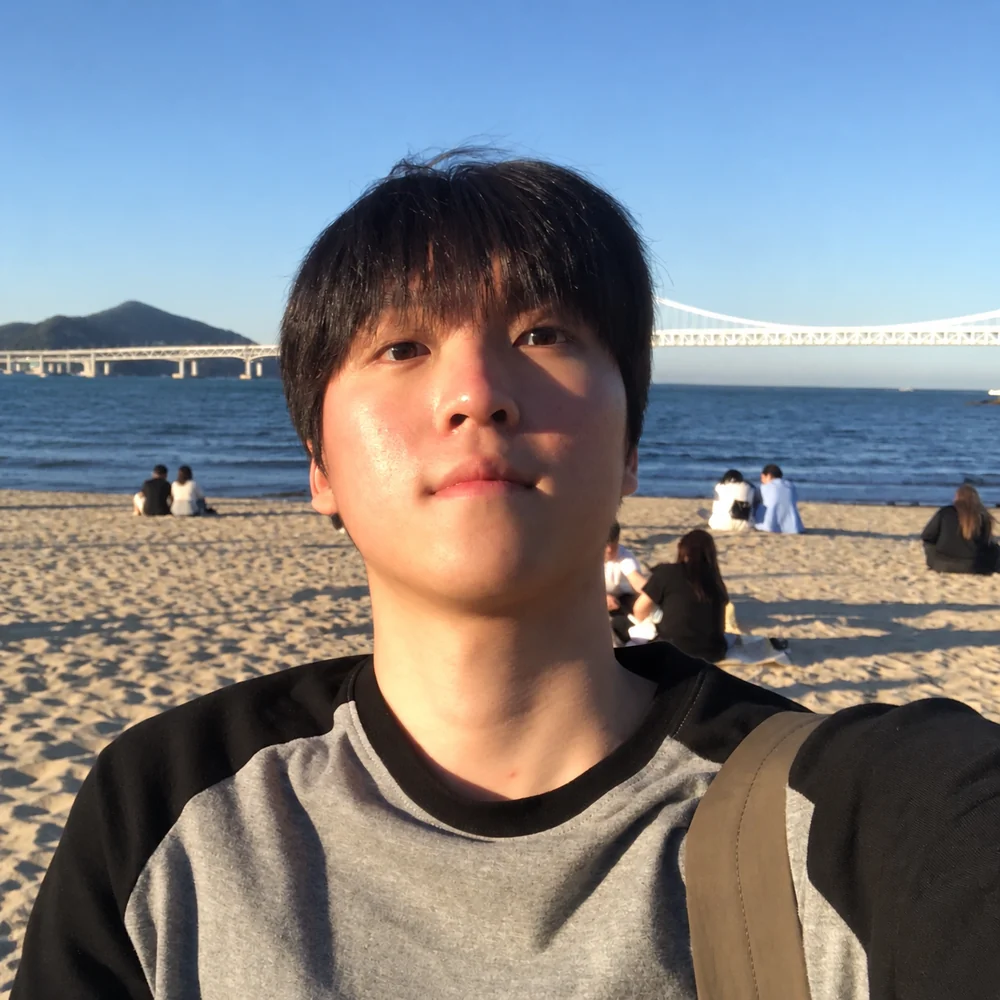

MY

HOBIN JANG
저는 부산에서 태어났고, 부산대학교 정보컴퓨터공학부 인공지능전공에 재학 중입니다.
AI 연구, 특히 자연어 처리 연구에 관심이 있어 부산대학교 데이터인텔리전스 연구실에서 학부연구생으로 활동하고 있으며 연구분야는 Multilingual LLM입니다.
2026년 학술동아리 UNTOC에서 회장을 맡고 있습니다.
2026년 정보컴퓨터공학부 학생회 SE;LON 기획부원으로 활동하고 있습니다.
기발하고 참신한 아이디어로 인공지능 분야의 새로운 지평을 여는 연구자가 되고 싶습니다!
- From
- Busan, Republic of Korea
- Affiliation
- PNU CSE 24
- profhb@pusan.ac.kr